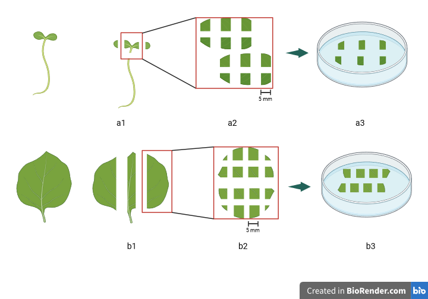
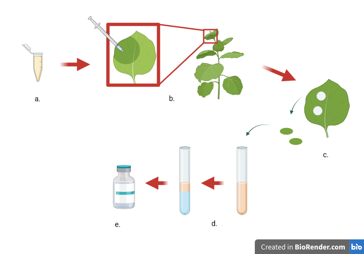
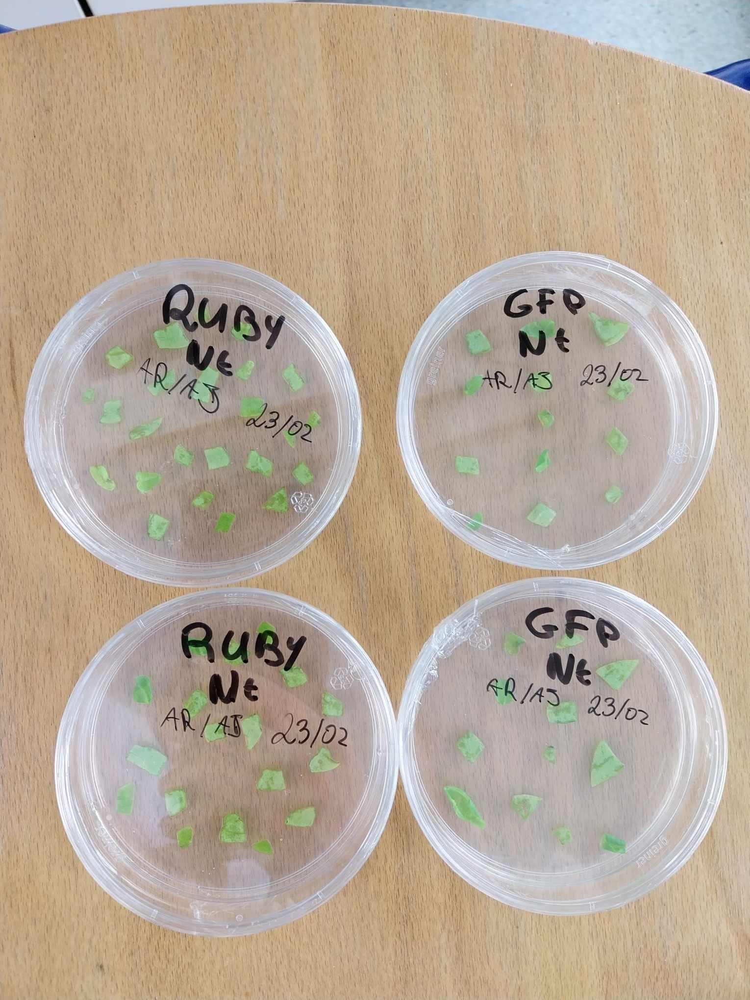
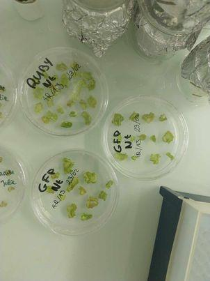
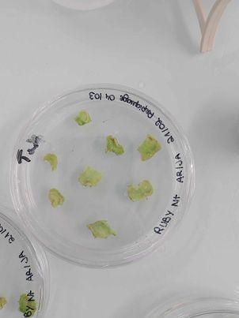
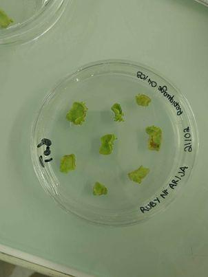
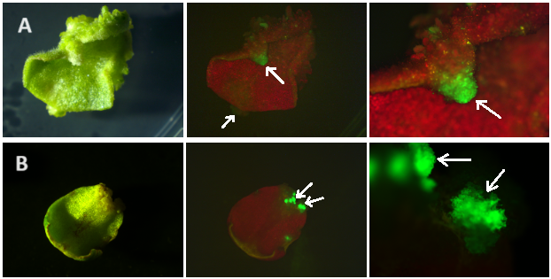
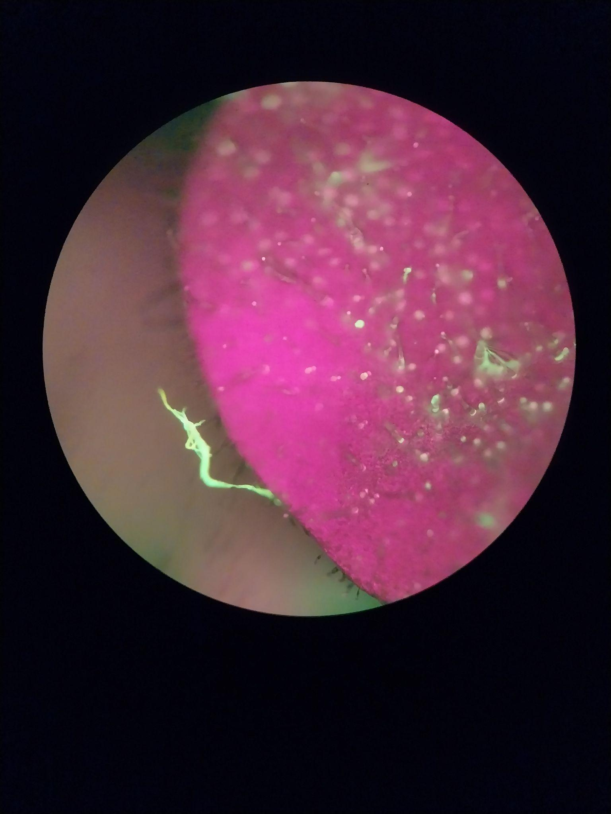
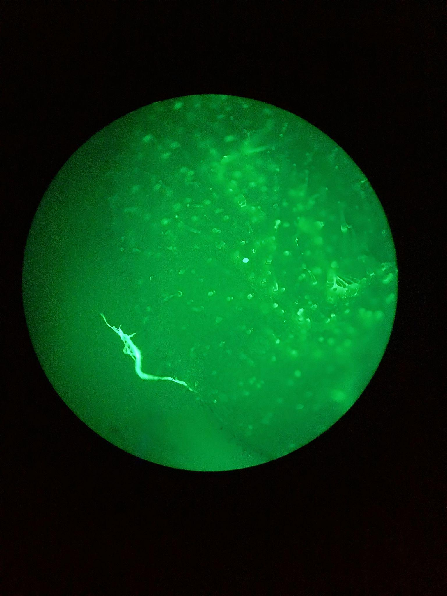
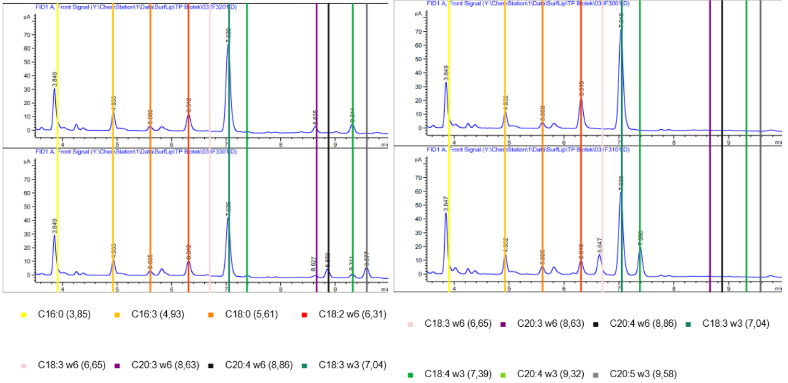

Biologie et Biotechnologies des Plantes : Transformation stable et transitoire de Nicotiana benthamiana et Solanum lycopersicum par Agrobacterium tumefaciens
Introduction
L’objectif de ces quatre séances de travaux pratiques était double : 1. Comparer les résultats de transformations stables réalisées à l’aide de gènes rapporteurs (GFP et construction RUBY) sur des plants de tabac (Nicotiana benthamiana) et de tomate (Solanum lycopersicum). 2. Réaliser une transformation transitoire sur du tabac afin de modifier le contenu lipidique de ses feuilles en recréant la voie de biosynthèse des acides gras polyinsaturés (PUFAs).
Dans les deux cas, les transformations ont été effectuées via Agrobacterium tumefaciens. La méthode d’agro-infiltration a été utilisée pour la transformation stable, tandis que la méthode d’agro-injection a été employée pour la transformation transitoire.
Concepts théoriques
Transformation stable et culture in vitro Une transformation stable consiste à incorporer de façon permanente un ou plusieurs gènes dans le génome d’une cellule hôte. Dans notre expérience, la transformation a été réalisée sur des explants de tabac et de tomate. Pour observer le phénotype, la régénération des plantes en culture in vitro est nécessaire. La culture in vitro est une technique permettant de régénérer une plante entière à partir de simples cellules ou de tissus végétaux dans un milieu nutritif enrichi en hormones, en présence d’un facteur de sélection (un antibiotique) et dans des conditions axéniques. La présence d’un antibiotique dans le milieu de culture, couplée à un gène de résistance dans le vecteur de transformation, permet de sélectionner et de maintenir en culture uniquement les cellules qui ont été transformées.
Transformation transitoire et chromatographie en phase gazeuse Une transformation transitoire consiste à incorporer un transgène qui ne sera exprimé que pendant quelques jours. Le but de l’expérience était de recréer dans les feuilles la voie de biosynthèse des PUFAs [3]. L’analyse des résultats se fait par chromatographie en phase gazeuse (CPG). Les lipides étudiés se distinguent par leurs propriétés physico-chimiques, notamment leur affinité pour la phase stationnaire lors de la chromatographie, ce qui permet de les séparer en fonction de leur temps de rétention.
Matériel et Méthodes
Transformation Stable
Préparation des explants de tomate (Solanum lycopersicum) sur milieu KCMS
Pour réaliser la transformation stable, nous avons prélevé les cotylédons de tomates cultivées in vitro. Les extrémités des cotylédons ont été retirées, puis ceux-ci ont été coupés en trois fragments d’environ 5 mm². Ces explants ont été mis en culture sur boîte de Pétri sur du milieu KCMS supplémenté avec : * 0,2 mM d’acétophénone * 0,9 mg/L de thiamine * 0,1 mg/L de kinétine * 0,2 mg/L de 2,4D
Cette préparation a duré deux jours en lumière indirecte dans une chambre de culture à 25°C. Les explants ont été positionnés avec leur épiderme supérieur en contact avec la gélose pour permettre une diffusion plus lente des hormones dans les tissus.
| Composant | Concentration initiale | Volume final |
|---|---|---|
| Milieu KCMS | - | 50 mL |
| Acétophénone | 20 mM | 500 µL |
| Thiamine | 10 mg/mL | 4.5 µL |
| Kinétine | 1 mg/mL | 5 µL |
| 2,4D | 1 mg/mL | 10 µL |
Tableau 1 : Composition du milieu de culture in vitro des tomates
Préparation des explants de tabac (Nicotiana benthamiana) sur milieu MS
Pour le tabac, nous avons prélevé des feuilles cultivées in vitro. La nervure centrale a été éliminée, puis les feuilles ont été découpées en carrés d’environ 5 mm². Ces explants ont été mis en culture sur milieu MS supplémenté avec : * 0,2 mM d’acétophénone * 1 mg/L de BAP * 0,1 mg/L d’ANA
Comme pour la tomate, la préparation a duré deux jours en lumière indirecte à 25°C, avec les explants positionnés épiderme supérieur vers la gélose.
| Composant | Concentration initiale | Volume final |
|---|---|---|
| Milieu ½ MS | - | 50 mL |
| Acétophénone | 20 mM | 500 µL |
| BAP | 10 mg/L | 5 µL |
| ANA | 1 mg/L | 5 µL |
Tableau 2 : Composition du milieu de culture in vitro de tabac

Figure 2 : Préparation des explants de tomates et de tabac en vue de la transformation [1]Transformation des explants
Une solution d’Agrobacterium tumefaciens (souche C58C1), préalablement transformée avec un plasmide Ti désarmé contenant les constructions à tester (35S:GFP et RUBY) et un gène de résistance à la kanamycine, a été utilisée. La turbidité des solutions a été ajustée par mesure d’absorbance à 600 nm (DO entre 0,4 et 0,6).
Pour la construction RUBY, la transformation bactérienne semblant inefficace, nous avons concentré les bactéries par centrifugation (4000G, 10 min, 25°C) pour reprendre dans un volume inférieur (10 mL de milieu Luria Broth), afin d’optimiser la transformation des explants. Les bactéries diluées ont ensuite été centrifugées et reprises dans 10 mL de milieu de coculture (KCMS pour la tomate, MS pour le tabac).
Les explants ont été immergés 30 minutes dans la solution d’infiltration, essorés pour éliminer l’excès de bactéries, puis repiqués sur de nouvelles boîtes (épiderme supérieur au contact de la gélose). Ils ont été laissés en culture pendant deux jours en lumière indirecte.
Régénération des plants transformés
Après la coculture, les explants ont subi quatre lavages successifs (5 min puis 3 x 3 min) dans un mélange eau + Tween pour éliminer les Agrobacterium de surface et éviter la nécrose due à leur reprise de croissance. Ils ont ensuite été mis en culture sur un milieu de régénération contenant de la kanamycine (100 µg/mL) et du Timentin (250 µg/mL).
| Milieu | Kanamycine | Timentin | Suppléments |
|---|---|---|---|
| KCMS (Tomate) | 100 µg/mL | 250 µg/mL | 0,9 µg/mL Thiamine |
| MS (Tabac) | 100 µg/mL | 250 µg/mL | 4 µL ANA + 4 µL BAP |
Tableau 3 : Composition des milieux de culture de tomate (KCMS) et de tabac (MS) modifiés pour la régénération
Contrôles et Repiquage Bien que le groupe n’ait pas réalisé de contrôles internes (vecteur vide, régénération non transformée, sélection antibiotique stricte) pour maximiser le nombre d’explants transformés, les résultats des groupes ayant réalisé ces contrôles ont été utilisés pour l’analyse. Après une semaine, les explants ont été transférés sur du milieu frais (MS ou KCMS) avec 150 mg/L de Timentin et de kanamycine. D’autres repiquages ont été effectués hebdomadairement jusqu’à l’apparition de tiges feuillées.
Vingt jours après le premier transfert, des cals se sont formés et des tiges feuillées ont régénéré. Nous avons sélectionné une plantule vigoureuse, exempte de vitrification (phénotype gorgé d’eau, feuilles transparentes), car ces plantes ne peuvent pas former de racines. La tige a été détachée du cal et plantée dans un milieu sans hormones pour réactiver la différenciation des racines via la production d’auxine par le méristème apical caulinaire (SAM).
Observation des explants
Certains explants ont été visualisés 12 jours après transformation à la loupe binoculaire et au stéréo-microscope. La GFP est excitée par des longueurs d’onde entre 460 et 488 nm (UV), permettant de visualiser sa fluorescence, bien que cela révèle aussi l’auto-fluorescence de la chlorophylle. Des plantes régénérées ont été observées après 17 jours de régénération racinaire.
Transformation Transitoire
Construction des plasmides
Les plasmides utilisés contenaient respectivement : * pBIN61 : P19 (un suppresseur viral) * pK7WG2D : Δ6-Desaturase * pKB7WG2D : Élongase 1 * pH7WG2D : Δ5-Desaturase
.png) Figure 3 : Schéma du plasmide pK7WG2D [3]
Figure 3 : Schéma du plasmide pK7WG2D [3]
Les échantillons ont été transformés avec les combinaisons suivantes : * 3001 : P19 * 3101 : P19 + Δ6 + Élongase * 3201 : P19 + Δ6 * 3301 : P19 + Δ6 + Élongase + Δ5
Agro-Injection
La méthode utilisée est l’agro-injection sur des plants de tabac de 5 semaines (Figure 4). 1. Mise en suspension des bactéries à une DO définie. 2. Injection de la solution dans la face inférieure des feuilles 3 et 4 à l’aide d’une seringue. 3. Après 48h, découpe de 2 disques de feuilles transformés (pointe de 1000 µL). 4. Incubation des disques dans une solution d’acide sulfurique pour solubiliser les lipides, suivie d’une centrifugation. 5. Récupération de la phase organique pour analyse en Chromatographie en Phase Gazeuse (CPG).

Figure 4 : Agro-Injection des Agrobacterium et préparation des échantillons pour analyse en CPG [1]Résultats
Transformation Stable
Observations macroscopiques et microscopiques Après une semaine de culture in vitro, les explants ont développé des cals. * GFP : Une fluorescence verte a été observée à certains endroits, notamment dans les trichomes. * RUBY : La transformation n’a pas réussi. Aucune coloration rouge notable n’a été observée ; seuls des signes de nécrose ou d’accumulation d’anthocyanes liés au stress ont été notés.


Figure 5 : Boîtes de pétrie de culture in vitro d’explants de tabac transformé avec la construction RUBY (en haut) et 35S:GFP (en bas)


Figure 6 : Boîtes de pétrie de culture in vitro d’explants de tabac transformé avec la construction RUBY (après repiquage)De nombreux échantillons ont été perdus à cause de contaminations fongiques, de vitrification ou de reprise des colonies d’Agrobacterium. Cependant, sur les échantillons restants, la fluorescence verte de la GFP a été clairement visible, indiquant une transformation fonctionnelle pour cette construction. Sous lumière UV, l’auto-fluorescence de la chlorophylle apparaît en rouge, ce qui peut masquer la GFP, mais celle-ci reste distincte dans les racines et les trichomes.

Figure 7 : Cals de tabac transformés à la GFP. A= Tabac, B= Tomate. Photos prises à la lumière visible (à gauche) et la lumière UV (au milieu et à droite)

Figure 8 : Photographies en microscopie à fluorescence de tabacs transformés à la GFP après repiquage. A gauche sans filtre (auto-fluorescence chlorophylle rouge + GFP verte), à droite en UV (GFP seule)Transformation Transitoire
L’analyse par chromatographie en phase gazeuse (CPG) a permis d’identifier les lipides produits selon les combinaisons de plasmides.

Figure 9 : Résultats de la chromatographie en phase gazeuse. Les temps de rétention du standard externe sont marqués par des traits colorés.- Comparaison 3001 vs 3101 : La quantité de C18:2w6 diminue pour laisser apparaître des C18:3w6 et C18:4w3. Cela correspond à l’action de la Δ6-Desaturase.
- Comparaison 3001 vs 3201 : L’échantillon 3201 possède moins de C18:2w6 et présente des C20:3w6 et C20:4w3 en faible quantité. Cela correspond aux effets cumulés de la Δ6-Désaturase et de l’Élongase.
- Échantillon 3301 : Il possède moins de C18:2w6 et nettement moins de C18:3w3. Il contient les produits finaux de la voie des PUFAs : C20:3w6, C20:4w3, C20:4w6 et C20:5w3, bien qu’en très faible quantité. On observe ainsi l’action combinée de la Δ6-Désaturase, de l’Élongase et de la Δ5-Désaturase.
Conclusion
La transformation stable par Agrobacterium tumefaciens a permis d’observer des phénotypes associés à la construction 35S:GFP, confirmant l’efficacité de cette méthode pour l’expression de gènes rapporteurs chez Nicotiana benthamiana et Solanum lycopersicum. En revanche, la construction RUBY n’a pas abouti à une coloration phénotypique observable, se limitant à des signes de stress. Le taux de réussite avant l’étape de repiquage était de 24 sur un total de 32 boîtes de Pétri. Les échecs sont principalement attribués à des contaminations fongiques, à la vitrification des explants ou à la reprise des colonies d’Agrobacterium. Globalement, les transformations sur tabac ont montré de meilleurs résultats que sur tomate.
Concernant la transformation transitoire, la présence de lipides associés à la voie des PUFAs a bien été détectée dans les feuilles (notamment C20:4w6 et C20:5w3), bien que les signaux soient faibles. La réduction de la quantité de certains lipides précurseurs (C18:2w6, C18:3w3) est cohérente avec l’activité des enzymes introduites (Δ6-Désaturase, Élongase, Δ5-Désaturase), prouvant la reconstitution partielle de la voie de biosynthèse.
Références
- Figures 1, 2 et 4 : Réalisées sur le site BioRender.
- Lacroix, B., Assoumou, Y., & Sangwan, R. S. (2003). Efficient in vitro direct shoot organogenesis and regeneration of fertile plants from embryo explants of Bambara groundnut (Vigna subterranea L. Verdc.). Plant Cell Rep, 21, 1153–1158.
- Ruiz-Lopez, N., Haslam, R. P., Napier, J. A., & Sayanova, O. (2014). Successful high-level accumulation of fish oil omega-3 long-chain polyunsaturated fatty acids in a transgenic oilseed crop. The Plant Journal, 77, 198–208.